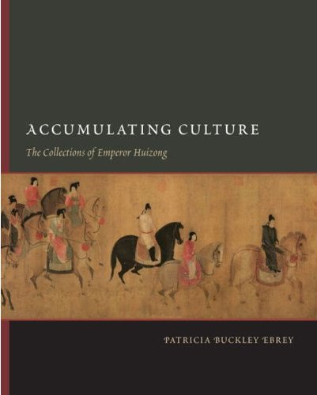

Patricia Ebrey, “Collecting at the Song Court”

Patricia Ebrey
Professor of History
Office Address: Room 112A Smith Hall, UW, Box 353560, Seattle WA 98195-3560
Email: [email redacted]
PatRicia Ebrey
Saturday, September 28, 2013
Patricia Ebrey, “Collecting at the Song Court”
In China, collecting of art and antiquities was well established by the Song period, both by private literati collectors and by the court. Although this sort of collecting did not cross cultural borders, power was still both created and challenged by its practice. Collecting by the court and by literati was to some degree in tension with each other. There were also differences in the type of object collected; the court had more advantages as a collector and cataloguer of antiquities than of calligraphy, for instance. This paper will explore these issues by examining the catalogues of the collections of Emperor Huizong (r. 1100-1125).